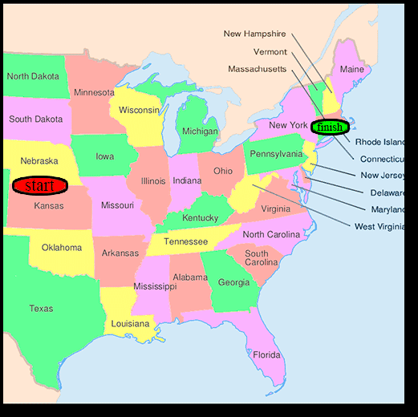

Théorie des graphes Cours 3 · L3 S5
Le monde est petit !
Dans les graphes du réel, deux sommets quelconques sont presque toujours reliés par un chemin court : c'est la propriété « petit monde ». Ce chapitre part de l'expérience de Milgram, mesure les distances avec le parcours en largeur et l'algorithme de Dijkstra, définit le diamètre, la largeur moyenne et le coefficient de clustering, puis présente le modèle de Watts–Strogatz, qui reproduit à la fois des chemins courts et une forte transitivité.
Objectifs
- Raconter l'expérience de Milgram et ce qu'elle mesure ; passer d'un nombre d'intermédiaires à une longueur de chemin.
- Calculer les plus courtes distances depuis un sommet : par un parcours en largeur sans poids, par l'algorithme de Dijkstra avec des poids positifs, en tenant le tableau d'exécution.
- Calculer le diamètre et la largeur moyenne \(L\) d'un graphe.
- Calculer le coefficient de clustering d'un sommet et d'un graphe.
- Expliquer le modèle de Watts–Strogatz et l'effet de la probabilité de rebranchement \(p\) sur \(L\) et \(C\).
Complément À propos des sources
Cette page reprend le chapitre 3 du poly ; les notes de séance ne le couvrent pas encore. Les tableaux d'exécution de Dijkstra, les distances, les coefficients de clustering et les courbes du modèle de Watts–Strogatz ont été recalculés avec NetworkX et les programmes reproduits plus bas. Les figures 3.8 à 3.11 du poly sont des tirages aléatoires : elles sont remplacées ici par de nouveaux tirages, de mêmes paramètres.
La propriété petit monde p. 28–29
Le chapitre 2 caractérisait le graphe dans sa totalité par sa connexité et la distribution de ses degrés. On continue ici à décrire les graphes qui modélisent le réel, avec deux nouvelles propriétés.
La première est la propriété petit monde (small world) : dans les graphes connexes qui modélisent des systèmes réels, il existe en général un chemin court entre toute paire de sommets. Dans un réseau social, il existe probablement un chemin très court entre votre profil et celui de n'importe quel autre utilisateur ; dans un réseau de co-occurrences de mots, les chemins entre deux mots sont également très courts. Pour le mesurer, on introduit l'algorithme de Dijkstra, qui calcule les plus courts chemins d'un sommet vers tous les autres.
La seconde est une forte transitivité : lorsque \(u\) est relié à \(v\) et \(v\) à \(w\), il est fréquent que \(u\) soit aussi relié à \(w\). Les amis de mes amis sont souvent mes amis. Le modèle de Watts–Strogatz tente de reproduire les deux propriétés à la fois.
Remarque « It's a small world! » p. 29
Fred Jones, de Peoria, assis à la terrasse d'un café de Tunis, demande du feu à son voisin de table. Ils engagent la conversation : l'étranger est un Anglais qui a passé plusieurs mois à Détroit pour étudier une usine de capsules de bouteilles. « Je sais que la question est idiote, dit Jones, mais auriez-vous croisé un certain Ben Arkadian ? C'est un vieil ami, il dirige une chaîne de supermarchés à Détroit… » « Arkadian, Arkadian… Mais oui, je crois bien ! Un petit homme très énergique, qui a fait un scandale à l'usine pour une livraison de capsules défectueuses. » « Incroyable ! s'exclame Jones. Que le monde est petit ! » (S. Milgram, The Small-World Problem, 1967)
L'expérience de Stanley Milgram p. 30–31
Considérons le réseau social de l'humanité entière. Il est impossible de le modéliser concrètement en recensant les connaissances de chacun ; on peut pourtant s'interroger sur sa structure.
Question 4 du poly : quelle est la probabilité que deux personnes tirées au hasard se connaissent ? Plus généralement, qu'elles aient une connaissance commune qui les relie ? Ou, de façon plus réaliste :
Question 5 La longueur d'une chaîne de connaissances
Entre deux personnes \(u\) et \(v\), on imagine un chemin de relations : \(u\) connaît \(c_1\), qui connaît \(c_2\), …, qui connaît \(c_k\), qui connaît \(v\). Ce chemin, que l'on peut supposer fini puisque les graphes du réel sont en général connexes, compte \(k\) relations de \(u\) à \(v\). Que vaut \(k\) ?
C'est la question qui intéresse Stanley Milgram dans l'expérience qu'il publie en 1967. Il mène deux études. Dans chacune, il choisit une personne cible et une ville de départ :
- étude du Kansas : départ de Wichita, au Kansas ; la cible vit à Cambridge, épouse d'un étudiant en théologie ;
- étude du Nebraska : départ d'Omaha, au Nebraska ; la cible est un agent de change qui travaille à Boston et vit à Sharon, au Massachusetts.

Milgram envoie des lettres aux habitants des villes de départ pour leur demander de participer. Un participant doit faire parvenir un message à la personne cible. S'il ne la connaît pas, il le transmet à celle de ses connaissances qui a le plus de chances de la connaître, qui le transmet à son tour selon les mêmes règles. À chaque transmission, la personne inscrit son nom sur un bordereau qui voyage avec le message : une fois le message arrivé, on reconstitue la chaîne et l'on sait par combien de mains il est passé.
Dans l'étude du Kansas, le premier message arrive au bout de quatre jours seulement, avec deux intermédiaires entre le fermier du Kansas de départ et la cible de Cambridge. Dans l'étude du Nebraska, 44 des 160 chaînes atteignent la cible ; les autres s'interrompent parce qu'un maillon n'a pas joué le jeu. Les 44 messages arrivés ont demandé entre 2 et 10 intermédiaires, avec une médiane de 5 seulement.
Remarque Intermédiaires et longueur du chemin p. 31
S'il a fallu \(i\) intermédiaires entre la personne de départ \(u\) et la cible \(v\), le chemin compte \(i + 1\) arêtes : \([(u, c_1), (c_1, c_2), \dots, (c_{i-1}, c_i), (c_i, v)]\).
Est-ce à dire qu'on relie deux personnes au hasard en suivant des arêtes tirées au hasard ? Non : les participants connaissaient le nom, le métier, l'éducation et la ville de la cible. Ils ont donc choisi, parmi leurs connaissances, les personnes les mieux placées pour faire parvenir le message : ils ont cherché le plus court chemin vers la cible. La suite du chapitre présente l'algorithme qui calcule ces plus courts chemins efficacement.
Complément Les « six degrés de séparation »
Avec une médiane de 5 intermédiaires, la chaîne typique compte \(5 + 1 = 6\) liens : c'est l'origine de l'expression populaire « six degrés de séparation ». Le résumé du poly parle de chemins « de taille 5 en moyenne » : c'est le nombre médian d'intermédiaires, pas la longueur en arêtes. Hors programme L'expérience a été critiquée (beaucoup de chaînes abandonnées, participants choisis), mais des mesures sur Facebook en 2016 ont confirmé l'ordre de grandeur, avec environ 3,6 intermédiaires en moyenne.
Plus courts chemins p. 31
Pour parler du plus court chemin, il faut d'abord dire ce que mesure la taille d'un chemin. Elle dépend de la présence de poids.
Définition 17 Taille d'un chemin
- Dans un graphe non pondéré : le nombre d'arêtes par lesquelles passe le chemin.
- Dans un graphe pondéré : la somme des poids des arêtes par lesquelles passe le chemin.
Le plus court chemin (shortest path) entre deux sommets est un chemin de taille minimale ; sa taille est la distance entre ces sommets. Dans un graphe non pondéré, un simple parcours en largeur depuis un sommet de départ donne le plus court chemin vers tous les autres : il découvre les sommets par distance croissante, ceux à 1 arête, puis à 2, et ainsi de suite.
Exercice 1 Distances par parcours en largeur p. 31 · à faire en TD
Instrumenter le parcours en largeur pour trouver le plus court chemin entre un sommet et le reste du graphe.
Indice
Quand un sommet \(u\) est découvert depuis \(v\), il est à une arête de plus que \(v\) : \(d(u) = d(v) + 1\). Retenir aussi \(v\) comme prédécesseur de \(u\) permet de reconstruire le chemin.
Solution proposée
On remplace l'ensemble des sommets vus par un dictionnaire de distances, rempli au moment où un sommet entre dans la file. Sur le graphe de la figure 3.2 sans ses poids :
from collections import deque
def distances(G, s):
dist = {s: 0}
file = deque([s])
while file:
v = file.popleft()
for u in G[v]:
if u not in dist:
dist[u] = dist[v] + 1
file.append(u)
return dist
G = {"A": ["B", "C", "D"], "B": ["A", "E", "F"], "C": ["A", "E"], "D": ["A", "E"],
"E": ["B", "C", "D", "F"], "F": ["B", "E", "G"], "G": ["F"]}
print(distances(G, "A"))$ python bfs_distances.py
{'A': 0, 'B': 1, 'C': 1, 'D': 1, 'E': 2, 'F': 2, 'G': 3}Pour le chemin lui-même, on stocke pred[u] = v à côté de dist[u], puis on remonte les prédécesseurs depuis la cible.
L'algorithme de Dijkstra p. 31–33
Quand le graphe est pondéré, le nombre d'arêtes ne suffit plus : un chemin de trois arêtes légères peut être plus court qu'une seule arête lourde. On utilise alors l'algorithme de Dijkstra.
L'algorithme p. 31–32
L'algorithme de Dijkstra s'applique aux graphes pondérés à poids positifs, ces poids représentant des distances entre les sommets que relient les arêtes ; pour des poids réels quelconques, il faut l'algorithme de Bellman-Ford. On démarre un parcours depuis le nœud d'intérêt et l'on tient à jour, pour chaque nœud, la distance minimale avec laquelle on sait l'atteindre. À chaque étape, on traite le nœud non visité le plus proche de la source, d'après les distances calculées. Pour gérer cet ordre, on utilise un tas (heap), une structure de données qui sert de file à priorité.
# Prend en entrée un graphe et un sommet source, et retourne les plus courts
# chemins et leur distance du sommet source aux autres sommets du graphe
procedure Dijkstra(Graphe G, Sommet S)
Tas t ← Tas((0, S))
Dictionnaire distance ← {}
Init(distance) avec ∞ pour tous les sommets
Ensemble visite ← {}
while t non vide do
(dist, u) ← t.pop()
if u ∉ visite then
visite = visite ∪ {u}
for all v ∈ N(u) do
disttov ← dist + G[(u, v)].poids
if disttov < distance[v] then
distance[v] ← disttov
t.push((disttov, v))
end if
end for
end if
end while
end proceduret.pop() retire du tas le couple de plus petite distance. Un sommet peut être poussé plusieurs fois dans le tas, chaque fois que l'on trouve un chemin plus court vers lui ; seul le premier retrait compte, les suivants sont ignorés grâce à visite.
Le tableau d'exécution p. 31–32
Pour dérouler l'algorithme à la main, on tient un tableau : une colonne par sommet, une ligne par sommet choisi. Chaque case donne la meilleure distance connue depuis le départ, avec en indice le sommet par lequel on y arrive ; un tiret signale un sommet déjà choisi. La dernière ligne rassemble les distances finales.
| Choisi | B | C | D | E | F | G |
|---|---|---|---|---|---|---|
| init | ∞ | ∞ | ∞ | ∞ | ∞ | ∞ |
| A | 4A | 7A | 6A | ∞ | ∞ | ∞ |
| B | − | − | − | 9B | 10B | ∞ |
| D | − | − | − | 8D | − | ∞ |
| C | − | − | − | − | − | ∞ |
| E | − | − | − | − | 9E | ∞ |
| F | − | − | − | − | − | 11F |
| G | − | − | − | − | − | − |
| Final | 4A | 7A | 6A | 8D | 9E | 11F |
Au départ, tous les sommets sont à une distance infinie de A. On choisit A, on parcourt ses voisins et l'on met à jour leurs distances : B à 4, C à 7, D à 6. On choisit ensuite le sommet non choisi le plus proche de A, B (4), dont les voisins E et F passent à 9 et 10. Puis D (6) : on découvre qu'on atteint E plus vite en passant par D, à 8. Puis C (7), qui n'améliore rien (7 + 1 = 8 n'est pas inférieur à 8) ; E (8), qui ramène F à 9 ; F (9), qui fixe G à 11 ; enfin G.
Les indices permettent de reconstruire les chemins en remontant : G vient de F, F de E, E de D, D de A. Le plus court chemin de A à G est A, D, E, F, G, de longueur \(6 + 2 + 1 + 2 = 11\).
Un raccourci change tout p. 32–33
Dans le second graphe, on ajoute une arête de poids 1 entre A et G. L'exécution est complètement différente.
| Choisi | B | C | D | E | F | G |
|---|---|---|---|---|---|---|
| init | ∞ | ∞ | ∞ | ∞ | ∞ | ∞ |
| A | 4A | 7A | 6A | ∞ | ∞ | 1A |
| G | − | − | − | ∞ | 3G | − |
| F | − | − | − | 4F | − | − |
| B | − | − | − | − | − | − |
| E | − | 5E | − | − | − | − |
| C | − | − | − | − | − | − |
| D | − | − | − | − | − | − |
| Final | 4A | 5E | 6A | 4F | 3G | 1A |
Ajout G, à 1, est choisi en premier ; il amène F à 3, et F amène E à 4 (et propose B à 9, moins bien que 4). B et E sont alors à égalité à 4 : on peut choisir l'un ou l'autre, le poly prend B. E fait ensuite passer C de 7 à 5. Le raccourci A–G a rapproché de A tout le bas du graphe : C se rejoint désormais par A, G, F, E, C. Le tableau du poly laisse vides les cases déjà fixées (« − ») ; dans les lignes de G et de F, B, C et D gardent leurs valeurs 4, 7 et 6.
Attention Ce que le pseudo-code ne dit pas Ajout
- Il n'initialise pas
distance[S]à 0 : la source, laissée à \(\infty\), peut recevoir une valeur positive quand un voisin la « redécouvre » (8 pour A, par B). Elle n'est pas retraitée, puisqu'elle est déjà visitée, mais il faut poserdistance[S] ← 0pour que le résultat soit juste. À vérifier - Il annonce retourner les plus courts chemins, mais ne garde que les distances. Les indices du tableau (\(4_A\), \(8_D\)…) sont les prédécesseurs : il faut les mémoriser dans un dictionnaire pour reconstruire les chemins.
- Avec un poids négatif, un sommet déjà visité pourrait encore se rapprocher, et l'algorithme se tromperait : c'est pourquoi les poids doivent être positifs.
Complément Dijkstra en Python, avec les chemins
Le module heapq fournit le tas : heappush et heappop, ce dernier renvoyant le couple de plus petite distance.
import heapq
def dijkstra(G, source):
distance = {u: float("inf") for u in G}
distance[source] = 0
precedent = {source: None}
tas, visite = [(0, source)], set()
while tas:
dist, u = heapq.heappop(tas)
if u in visite:
continue
visite.add(u)
for v, poids in G[u].items():
if dist + poids < distance[v]:
distance[v] = dist + poids
precedent[v] = u
heapq.heappush(tas, (distance[v], v))
return distance, precedent
aretes = [("A", "B", 4), ("A", "C", 7), ("A", "D", 6), ("B", "E", 5), ("C", "E", 1),
("D", "E", 2), ("B", "F", 6), ("E", "F", 1), ("F", "G", 2)]
G = {}
for u, v, p in aretes:
G.setdefault(u, {})[v] = p
G.setdefault(v, {})[u] = p
distance, precedent = dijkstra(G, "A")
print(distance)
chemin, u = [], "G"
while u is not None:
chemin.append(u)
u = precedent[u]
print(" -> ".join(reversed(chemin)))$ python dijkstra.py
{'A': 0, 'B': 4, 'C': 7, 'D': 6, 'E': 8, 'F': 9, 'G': 11}
A -> D -> E -> F -> GAvec NetworkX : nx.single_source_dijkstra_path_length(G, "A") pour les distances, nx.dijkstra_path(G, "A", "G") pour un chemin. Sans le paramètre weight, nx.shortest_path_length compte les arêtes, comme un parcours en largeur.
Exercice 2 Dijkstra depuis E Ajout
Dérouler l'algorithme de Dijkstra sur le graphe de la figure 3.2, depuis E. Donner l'ordre dans lequel les sommets sont choisis, et les distances finales.
Indice
Les voisins de E sont B (5), C (1), D (2) et F (1). En cas d'égalité, prendre l'ordre alphabétique.
Solution proposée
E (0) fixe B à 5, C à 1, D à 2, F à 1. On choisit C (1), qui propose A à 8 ; puis F (1), qui fixe G à 3 (B à 7 n'améliore pas 5) ; puis D (2), qui ramène A à 8 (pas mieux) ; G (3) ; B (5), qui propose A à 9 ; enfin A (8). Ordre : E, C, F, D, G, B, A. Distances : A 8, B 5, C 1, D 2, F 1, G 3. NetworkX donne les mêmes distances.
Diamètre et largeur moyenne p. 33
Pour résumer en un nombre la taille des plus courts chemins d'un graphe, on regarde soit le plus long d'entre eux, soit leur moyenne.
Définition 18 Diamètre
Le diamètre d'un graphe est le plus long des plus courts chemins entre toutes les paires de sommets du graphe.
L'expérience de Milgram suggère que les distances entre les personnes d'un réseau social humain sont faibles. C'est le cas d'un grand nombre de graphes, où l'on va d'un sommet à un autre en une dizaine d'arêtes ou moins. Le diamètre est un indicateur courant de la taille des plus courts chemins : le projet Konect donne par exemple celui d'un grand nombre de graphes réels.
Le modèle de Watts–Strogatz considère plutôt la taille moyenne des plus courts chemins entre les \(C_n^2 = \frac{n(n-1)}{2}\) paires de sommets : la largeur moyenne \(L\) du graphe (characteristic path length). Avec \(P\) l'ensemble des \(C_n^2\) paires de sommets de \(V\) :
Ajout Le poly emploie aussi « longueur moyenne » pour \(L\) : c'est la même quantité. Le diamètre est sensible à une seule paire éloignée ; \(L\) décrit la distance typique.
Exemple Le graphe de la figure 3.2, sans les poids Ajout
En comptant les arêtes, la paire la plus éloignée est à distance 3 (par exemple A et G, ou C et G) : le diamètre vaut 3. Les 21 paires totalisent 36, d'où \(L = 36/21 \approx 1{,}71\). Avec les poids, le diamètre pondéré vaut 11, la distance de A à G.
Modéliser les données avec Erdős–Rényi p. 33–34
Duncan Watts et Steven Strogatz, dans Collective dynamics of ‘small-world’ networks (1998), étudient trois graphes : les acteurs reliés quand ils ont joué dans un même film, le réseau électrique de l'ouest des États-Unis, et le réseau des neurones du ver Caenorhabditis elegans. Ils créent pour chacun un graphe d'Erdős–Rényi équivalent (même nombre de sommets, nombre d'arêtes similaire) et comparent.
| Graphe | \(L\) réel | \(L\) Erdős–Rényi | \(C\) réel | \(C\) Erdős–Rényi |
|---|---|---|---|---|
| Acteurs de cinéma | 3,65 | 2,99 Ajout | 0,79 | 0,00027 |
| Réseau électrique | 18,7 | 12,4 | 0,080 Ajout | 0,005 Ajout |
| C. elegans | 2,65 | 2,25 Ajout | 0,28 | 0,05 |
Pour \(L\), le modèle d'Erdős–Rényi s'en sort bien : les valeurs sont similaires, un peu plus faibles, sauf pour le réseau électrique (12,4 au lieu de 18,7). Les valeurs marquées « Ajout » viennent de l'article de Watts et Strogatz ; le poly ne les cite pas.
Le coefficient de clustering p. 34
En revanche, Watts et Strogatz observent que les graphes d'Erdős–Rényi ne reproduisent pas une autre propriété importante : la transitivité, que mesure le coefficient de clustering.
Supposons qu'un sommet ait \(k\) voisins. Entre ces \(k\) voisins, il peut exister au plus \(C_k^2 = \frac{k(k-1)}{2}\) arêtes. Le coefficient de clustering du sommet est le rapport entre le nombre d'arêtes qui existent effectivement entre ses voisins et ce nombre maximal.
Définition 19 Coefficient de clustering d'un sommet
Soit \(u \in V\) un sommet, \(N(u)\) son voisinage et \(k = d(u)\) son degré. Son coefficient de clustering (clustering coefficient) vaut
On mesure ainsi la transitivité : les voisins \(v\) et \(w\) de \(u\) sont-ils eux-mêmes reliés, forment-ils des triangles avec \(u\) ? Si tous les voisins de \(u\) sont reliés entre eux, \(c(u) = 1\) ; si aucun ne l'est, \(c(u) = 0\).
Définition 20 Coefficient de clustering du graphe
Le coefficient de clustering \(C\) du graphe \(G\) est la moyenne des coefficients de ses sommets :
Les graphes réels ont des coefficients de clustering considérablement plus élevés que leurs équivalents d'Erdős–Rényi : 0,79 contre 0,00027 pour les acteurs, 0,28 contre 0,05 pour les neurones de C. elegans (tableau ci-dessus). Dans un graphe d'Erdős–Rényi, deux voisins de \(u\) sont reliés avec la probabilité \(p\), comme n'importe quelle paire : \(C \approx p\), très faible pour un grand graphe peu dense.
Attention Les sommets de degré 0 ou 1 Ajout
Pour \(k \lt 2\), \(C_k^2 = 0\) et la formule n'a pas de sens. On pose alors \(c(u) = 0\), comme NetworkX, et ces sommets comptent dans la moyenne \(C\).
Exemple Le graphe de la figure 3.2 Ajout
B a trois voisins, A, E et F ; une seule paire est reliée, E–F : \(c(B) = 1/3\). E a quatre voisins, B, C, D et F, soit 6 paires possibles ; seule B–F existe : \(c(E) = 1/6\). F (voisins B, E, G) contient l'arête B–E : \(c(F) = 1/3\). A, C, D et G valent 0. Donc \(C = \frac{1}{7}\left(\frac13 + \frac16 + \frac13\right) = \frac{5}{42} \approx 0{,}119\).
Exercice 3 Coefficients de clustering Ajout
Soit le graphe d'arêtes A–B, A–C, A–D, B–C, C–D, D–E. Calculer \(c(u)\) pour chaque sommet, puis \(C\), le diamètre et \(L\).
Solution proposée
\(c(A) = 2/3\) (voisins B, C, D ; arêtes B–C et C–D) ; \(c(B) = 1\) (voisins A, C, reliés) ; \(c(C) = 2/3\) (voisins A, B, D ; arêtes A–B et A–D) ; \(c(D) = 1/3\) (voisins A, C, E ; arête A–C) ; \(c(E) = 0\) (un seul voisin). \(C = (2/3 + 1 + 2/3 + 1/3 + 0)/5 = 8/15 \approx 0{,}53\). Le diamètre vaut 3 (B–E), et les 10 paires totalisent 15 : \(L = 1{,}5\). Valeurs vérifiées avec NetworkX.
Le modèle de Watts–Strogatz p. 34–36
Watts et Strogatz cherchent un modèle plus fidèle aux données que celui d'Erdős–Rényi, qui imite à la fois une largeur moyenne \(L\) faible et un coefficient de clustering \(C\) élevé.
Le graphe régulier de départ p. 34–35
Ils partent d'un graphe régulier : \(n\) sommets disposés en cercle, chacun relié à ses \(k\) plus proches voisins, \(k/2\) de chaque côté. Comme on relie chaque sommet à ses voisins proches, et que ceux-ci sont aussi proches entre eux, le coefficient de clustering est élevé.
Dans cet exemple, chaque sommet a 4 voisins, qui pourraient être reliés par 6 arêtes ; 3 existent, 3 n'existent pas : \(c(u) = 3/6 = 0{,}5\) pour tous les sommets, donc \(C = 0{,}5\). En revanche, comme les sommets ne sont reliés que de proche en proche, le diamètre vaut 3, ce qui est beaucoup pour un graphe de 12 sommets, et la largeur moyenne \(L\) vaut environ 1,9.
Ajout Depuis un sommet, 4 sommets sont à distance 1, 4 à distance 2 et les 3 autres, de l'autre côté du cercle, à distance 3 : \(L = (4 + 8 + 9)/11 = 21/11 \approx 1{,}91\).
Le rebranchement p. 35
Watts et Strogatz ajoutent un paramètre, la probabilité de rebranchement \(p\) (rewiring) : avec la probabilité \(p\), chaque arête du graphe change d'extrémité, pour aller vers un sommet tiré au hasard. Le rebranchement crée des raccourcis à travers le cercle, qui permettent de s'y déplacer plus vite. Il diminue aussi le coefficient de clustering, en cassant la régularité des voisinages.
Effet de p et de k sur L et C p. 35–36
Si \(k\) contrôle le degré moyen, \(p\) agit sur la largeur moyenne \(L\) et sur le coefficient de clustering \(C\). Avec \(n = 100\) et \(k = 4\), \(L\) dépasse 12 au départ ; augmenter \(p\) la ramène à des valeurs en accord avec celles des graphes réels, et réduit \(C\) vers des valeurs réalistes. Avec \(k = 10\), le graphe est plus densément connecté : \(L\) est plus bas, on y navigue plus facilement grâce aux liens plus nombreux.
Ajout Les courbes montrent le point clé du modèle : \(L\) chute dès les petites valeurs de \(p\) (de 12,9 à 6,1 pour \(p = 0{,}05\), avec \(k = 4\)), alors que \(C\) reste élevé (0,43). Quelques raccourcis suffisent à rapprocher tout le monde, sans détruire les triangles locaux. C'est dans cette zone, \(p\) entre 0,01 et 0,1 environ, que le modèle produit des graphes petit monde : \(C\) élevé et \(L\) faible, comme les graphes réels.
Complément Watts–Strogatz avec NetworkX
import networkx as nx
for p in (0, 0.05, 0.5):
G = nx.connected_watts_strogatz_graph(100, 4, p, seed=1)
print(p, round(nx.average_shortest_path_length(G), 2),
round(nx.average_clustering(G), 3))watts_strogatz_graph(n, k, p) construit le graphe ; la variante connected_ recommence le tirage tant qu'il n'est pas connexe, sans quoi \(L\) ne serait pas défini. average_shortest_path_length calcule \(L\), average_clustering calcule \(C\), diameter le diamètre. Pour le graphe régulier, \(C = \frac{3(k-2)}{4(k-1)}\) : 0,5 pour \(k = 4\), 0,67 pour \(k = 10\). Hors programme
À retenir
L'essentiel
- Propriété petit monde : dans les graphes réels connexes, deux sommets quelconques sont reliés par un chemin court. Milgram : médiane de 5 intermédiaires (6 liens) entre le Nebraska et Boston.
- \(i\) intermédiaires font un chemin de \(i + 1\) arêtes.
- Taille d'un chemin : nombre d'arêtes sans poids, somme des poids sinon. Sans poids, un parcours en largeur donne les distances depuis un sommet.
- Dijkstra (poids positifs) : on choisit à chaque étape le sommet non visité le plus proche, avec un tas, et l'on relâche ses voisins : \(d(v) \leftarrow \min(d(v), d(u) + w(u, v))\). On le déroule dans un tableau, prédécesseur en indice.
- Diamètre : le plus long des plus courts chemins. Largeur moyenne \(L\) : leur moyenne sur les \(\frac{n(n-1)}{2}\) paires.
- Clustering d'un sommet : arêtes entre ses voisins divisées par \(C_k^2\) ; celui du graphe est la moyenne. Il mesure la transitivité.
- Erdős–Rényi reproduit un \(L\) faible, mais pas le \(C\) élevé des graphes réels.
- Watts–Strogatz : graphe régulier en cercle (\(n\), \(k\)), dont chaque arête est rebranchée avec la probabilité \(p\). Les raccourcis font chuter \(L\) très vite, \(C\) baisse plus lentement : pour \(p\) petit, \(C\) élevé et \(L\) faible.
Auto-évaluation
Un message est passé par 4 intermédiaires. Combien d'arêtes compte la chaîne ?
5 : une de plus que d'intermédiaires.
Pourquoi un parcours en largeur ne suffit-il pas dans un graphe pondéré ?
Il trouve le chemin qui a le moins d'arêtes, pas celui de plus petite somme des poids. Il faut traiter les sommets par distance pondérée croissante : c'est Dijkstra.
À quoi sert le tas dans l'algorithme de Dijkstra ?
À retirer rapidement, à chaque étape, le sommet non visité de plus petite distance connue : c'est une file à priorité.
Quelle différence entre le diamètre et la largeur moyenne \(L\) ?
Le diamètre est le maximum des distances entre paires de sommets, \(L\) leur moyenne.
Un sommet a 5 voisins, reliés entre eux par 4 arêtes. Son coefficient de clustering ?
\(4 / C_5^2 = 4/10 = 0{,}4\).
Que reproduit le modèle de Watts–Strogatz que celui d'Erdős–Rényi ne reproduit pas ?
Un coefficient de clustering élevé, en plus d'une largeur moyenne faible : grâce au graphe régulier de départ, les voisins d'un sommet restent reliés entre eux.
Que se passe-t-il quand \(p\) passe de 0 à 1 dans le modèle de Watts–Strogatz ?
À \(p = 0\), le graphe régulier : \(C\) élevé, \(L\) grand. Dès un petit \(p\), des raccourcis font chuter \(L\) alors que \(C\) reste élevé (petit monde). À \(p\) proche de 1, le graphe devient presque aléatoire : \(L\) et \(C\) faibles, comme Erdős–Rényi.
Références
- N. Dugué, Graphes et applications, poly du cours, Le Mans Université, 2026-2027 : chapitre 3.
- S. Milgram, The Small-World Problem, Psychology Today, 1967.
- E. W. Dijkstra, A note on two problems in connexion with graphs, Numerische Mathematik, 1959.
- D. J. Watts et S. H. Strogatz, Collective dynamics of ‘small-world’ networks, Nature, 1998.
- Les diamètres de graphes réels sur Konect.